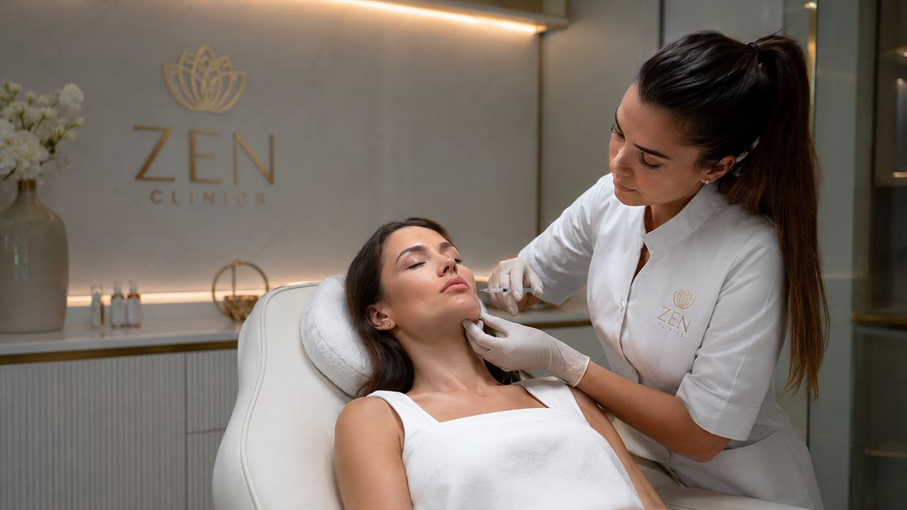

Hidratare
Poate fi potrivita pentru pielea care are nevoie de sustinere a hidratarii si elasticitatii.

Tratamente faciale
Hidratare intensa si imbunatatirea calitatii pielii din interior, intr-o abordare prudenta si personalizata.
Dermato-estetic
Skinbooster este orientat catre sustinerea calitatii pielii, hidratare si un aspect mai proaspat, fara modificarea trasaturilor faciale.
Planul se stabileste in urma evaluarii, in functie de textura pielii, nivelul de hidratare, toleranta individuala si obiectivele realiste ale pacientului.
Cadru vizual


Potrivire
Indicatia finala se stabileste in urma consultatiei. Punctele de mai jos sunt orientative si nu inlocuiesc evaluarea medicului.
Poate fi potrivita pentru pielea care are nevoie de sustinere a hidratarii si elasticitatii.
Poate contribui la un aspect mai luminos si mai uniform, in functie de raspunsul individual.
Se tine cont de textura pielii, sensibilitate, istoric si recomandarea medicului.
Experienta
Discutie despre obiective, istoric medical, indicatii si limite.
Analiza texturii pielii, a nivelului de hidratare si a zonelor care pot fi tratate.
Recomandari clare, etape explicate si asteptari formulate prudent.
Tratamentul se desfasoara conform planului, cu recomandari ulterioare de ingrijire.
Obiective
Fiecare obiectiv este discutat realist, in functie de anatomie, indicatie, tehnica si evolutia individuala.
Are ca obiectiv sustinerea hidratarii pielii din interior, in functie de indicatie.
Poate contribui la un aspect mai proaspat si mai odihnit al pielii.
Urmareste imbunatatirea calitatii pielii intr-un mod discret si controlat.
Detalii importante
Datele despre durata, recuperare, indicatii sau contraindicatii trebuie validate in consultatie, in functie de zona tratata si contextul medical.
Skinbooster se discuta in functie de textura pielii, obiectiv, istoric medical si recomandarea medicului.
Durata, pregătirea și recomandările post-procedură se stabilesc în consultație, în funcție de indicație, tehnică, istoricul medical și obiectivul urmărit.
Riscurile, limitele și eventualele contraindicații sunt explicate înainte de procedură, astfel încât decizia să fie luată informat și responsabil.
FAQ
Decizia se ia in urma unei consultatii, dupa evaluarea pielii, istoricului medical si obiectivelor tale.
Tratamentul urmareste sustinerea hidratarii, a luminozitatii si a calitatii pielii. Rezultatele pot varia individual.
Evolutia poate diferi in functie de piele, protocol si raspuns individual. Asteptarile se discuta la consultatie.
Da. Consultatia ajuta la stabilirea indicatiei, limitelor si pasilor potriviti pentru fiecare persoana.
Recomandarile post-procedura se stabilesc in functie de zona tratata si de evolutia individuala.
Experiența
La ZEN Clinics, frumusețea ta este înțeleasă în profunzime. Îmbinăm știința, arta și empatia pentru rezultate care te reprezintă.
Consultatie
Discuta cu echipa ZEN Clinics despre optiunile potrivite, limitele procedurii si pasii recomandati pentru cazul tau.
Contactează-ne